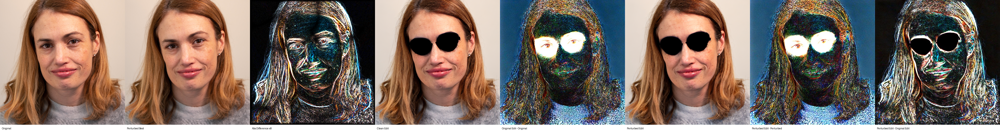
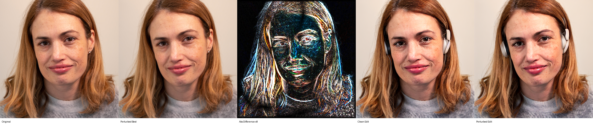
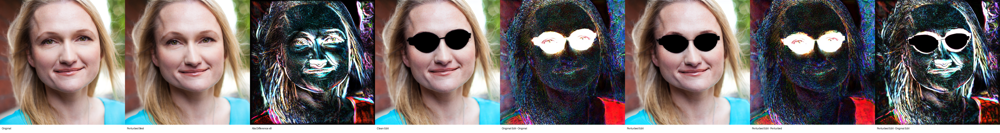
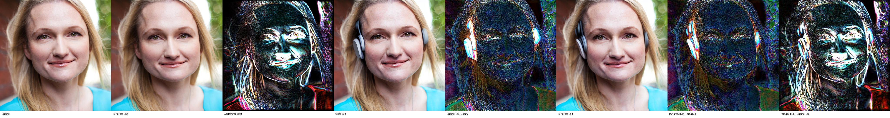
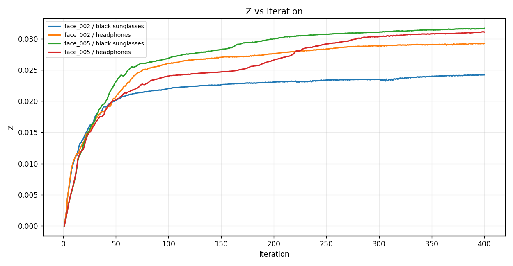
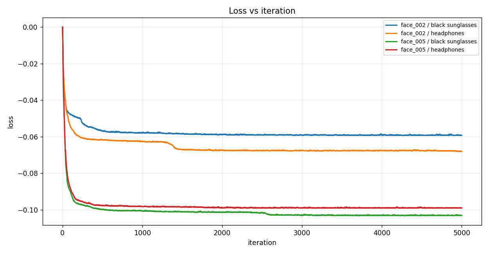
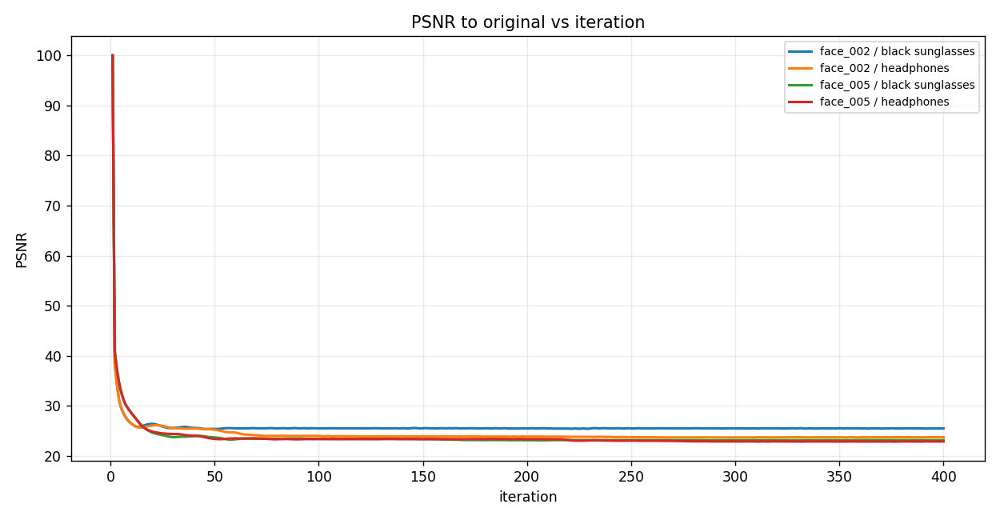
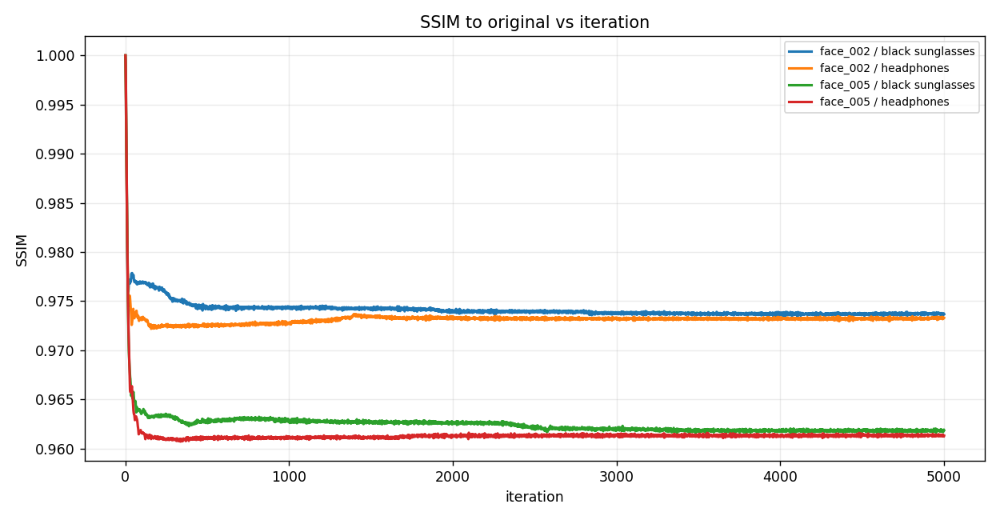
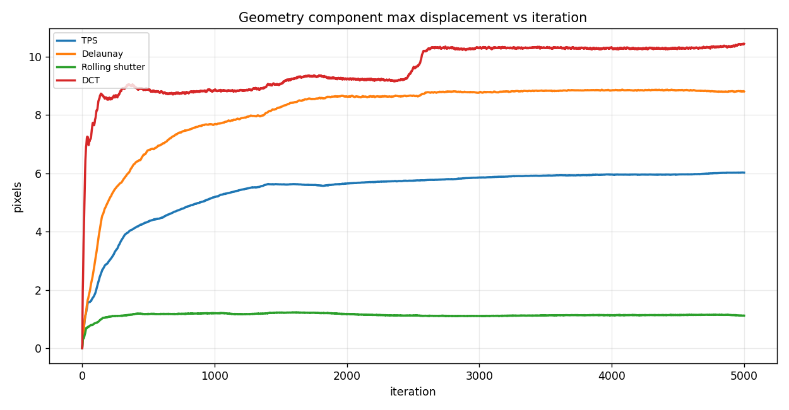

FACE: ArcFace White-box Geometric Identity Optimization
Frozen iResNet-100 identity-distance results with downstream InstructPix2Pix evaluation
Author: Parth Katiyar
FACE optimizes Z = 1 - cosine_similarity between original and perturbed full-image ArcFace iResNet-100 embeddings. The loss is exactly loss = -Z. ArcFace weights are frozen; only geometry parameters are optimized. No landmarks, face detection, alignment, visual counter-loss, VAE objective, or UNet objective is used.
1. Run matrix
Four prompt-labeled cases are retained for compatibility. The ArcFace objective is not prompt-conditioned; prompts are used only for downstream InstructPix2Pix edit evaluation.
| face | prompt | final Z | best Z | ArcFace cosine sim | cosine score % | SSIM | PSNR | edit output SSIM | max disp px | fraction clamped |
|---|---|---|---|---|---|---|---|---|---|---|
| face_002 | add black sunglasses | 0.0592 | 0.0593 | 0.9408 | 94.081 | 0.9737 | 24.621 | 0.6466 | 6.3730 | 0.0227 |
| face_002 | add headphones | 0.0680 | 0.0681 | 0.9320 | 93.198 | 0.9733 | 24.551 | 0.6269 | 7.2244 | 0.0227 |
| face_005 | add black sunglasses | 0.1030 | 0.1032 | 0.8970 | 89.704 | 0.9619 | 22.976 | 0.6888 | 18.171 | 0.0530 |
| face_005 | add headphones | 0.0990 | 0.0991 | 0.9010 | 90.102 | 0.9613 | 22.908 | 0.6790 | 11.920 | 0.0530 |
2. Case image strips
face_002 — add black sunglasses

outputs/arcface_identity/20260703_103418_arcface_identity_all_sequential/runs/arcface_identity/arcface_iresnet100/face_002__add_black_sunglasses
face_002 — add headphones

outputs/arcface_identity/20260703_103418_arcface_identity_all_sequential/runs/arcface_identity/arcface_iresnet100/face_002__add_headphones
face_005 — add black sunglasses

outputs/arcface_identity/20260703_103418_arcface_identity_all_sequential/runs/arcface_identity/arcface_iresnet100/face_005__add_black_sunglasses
face_005 — add headphones

outputs/arcface_identity/20260703_103418_arcface_identity_all_sequential/runs/arcface_identity/arcface_iresnet100/face_005__add_headphones
3. Graphs
{kind=link}

{kind=link}

{kind=link}

{kind=link}

{kind=link}
